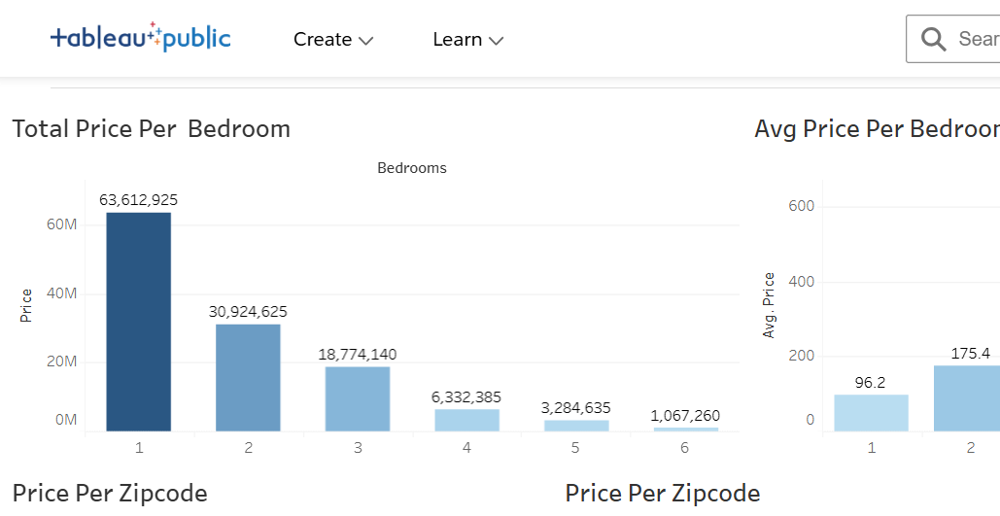

Built an interactive Power BI dashboard to analyze survey data from data professionals, uncovering insights on salary trends, job roles, programming preferences, and work-life balance. Transformed raw data into actionable insights to support career and hiring decisions..


This project involved exploring a real world dataset of global company layoffs using SQL. The goal was to clean the data, remove inconsistencies, and run structured queries to uncover trends across industries, countries, and time periods.

This project involved building an interactive Tableau dashboard to analyze real estate pricing data across Seattle's zip codes. By visualizing metrics like total and average price per bedroom, geographic price distribution, and yearly revenue trends, the dashboard makes it easy to spot where value lives in the housing market and how bedroom count drives pricing decisions.

The project involved filtering and standardizing customer records by removing inconsistencies, handling missing values across multiple fields, and ensuring data integrity throughout the dataset. This process is critical for accurate analysis and reliable insights from messy real world data.

The project involved web scraping with Python to extract data from online sources. When you're searching for specific data and finally locate it online but don't have direct access, web scraping becomes invaluable for retrieving and using that information efficiently. Understanding how to scrape data helps analysts and engineers access datasets that might otherwise be unavailable through conventional means.